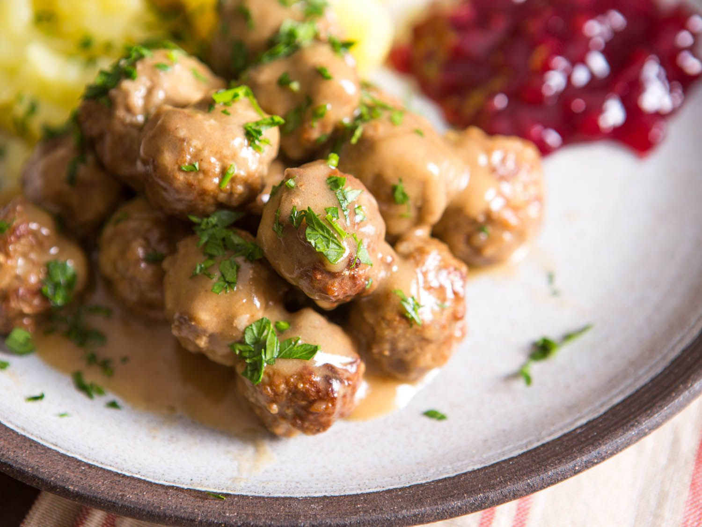

Swedish Meatballs

Swedish meatball sauce is made up of just a few pantry staple ingredients
Description
A rich and creamy Swedish meatball sauce makes a comforting meal when served over pre-cooked meatballs. This quick and easy recipe makes a generous amount of sauce for 10 ounces of frozen meatballs. Serve over egg noodles or rice.
Ingredients
- 1 cup beef stock
- 1 cup heavy cream
- 3 tablespoons all-purpose flour
- 1 tablespoon soy sauce
- ½ teaspoon ground black pepper, or more to taste
- ½ teaspoon dried rosemary, crushed, or more to taste
- 10 ounces frozen cooked meatballs, thawed
Steps
- Whisk together stock, cream, flour, soy sauce, 1/2 teaspoon pepper, and 1/2 teaspoon rosemary in a large saucepan over low heat until smooth.
- Cook, stirring occasionally, until thickened, about 10 minutes.
- Stir in thawed meatballs, and continue cooking until meatballs are heated through, about 5 more minutes. An instant-read thermometer inserted into the center of the meatballs should read at least 160 degrees F (71 degrees C).
- Taste and adjust seasonings before serving.